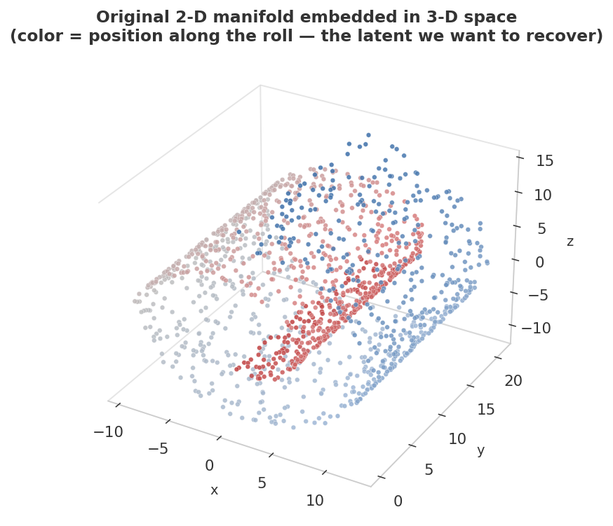
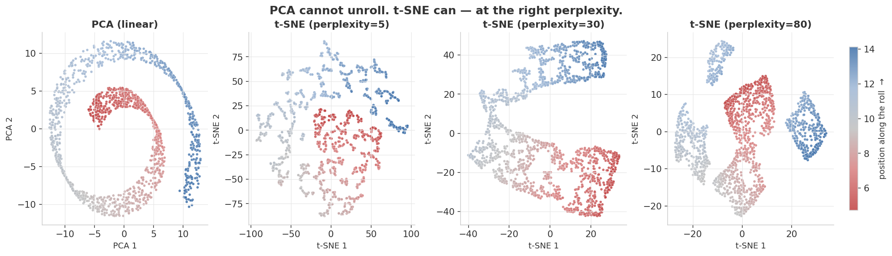
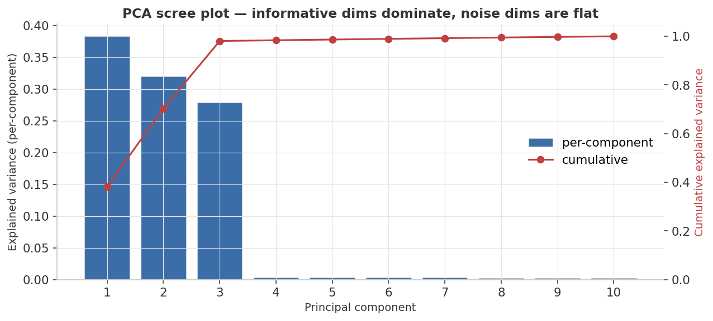
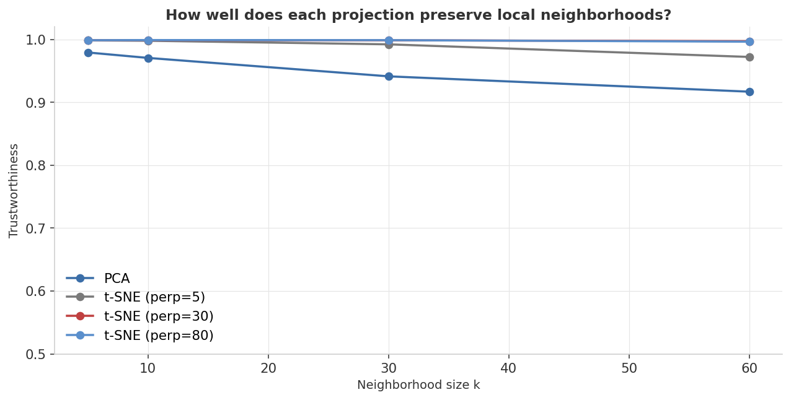

98.1%
PCA Top-3 Cumulative Variance
PC1 + PC2 + PC3 (0.383 + 0.320 + 0.278)
0.999
Best t-SNE Trustworthiness
t-SNE perp = 30 & 80 · @k=10
0.971
PCA Trustworthiness
Linear projection · @k=10
Embedding scorecard
| Method | Trustworthiness @k=10 | Notes |
|---|---|---|
| PCA | 0.9706 | linear projection; preserves global variance, cannot unroll curvature |
| t-SNE perp = 5 | 0.9979 | micro-neighborhoods; fragmented layout |
| t-SNE perp = 30 | 0.9989 | balanced sweet spot; smooth color gradient |
| t-SNE perp = 80 | 0.9989 | macro-neighborhoods; softer cluster borders |
● navy = best in column ● gray = neutral · values from
results/metrics.jsonHeadline finding: these two methods don't compete for the same prize. PCA gives you a faithful global picture but can't unroll curvature. t-SNE gives you a perfect local picture but distorts global distances on purpose. Choose by the question, not by which gives the prettier plot.
Visual diagnostics
1 · The truth — Swiss roll in 3-D
A 2-D surface curled into 3-D, then padded with 7 dimensions of pure Gaussian noise (not shown). Color encodes the 1-D position along the roll — the latent variable a good projection should preserve as a smooth color gradient.

2 · Projections side-by-side
PCA finds the two directions of largest variance but cannot unroll the curved manifold — red and blue points end up adjacent. t-SNE at perplexity 30 achieves a clean, continuous unrolling where the color gradient flows smoothly end-to-end.

3 · PCA scree plot
PC1–PC3 capture ~98% of variance; PC4–PC10 each contribute ~0.3% — the empirical signature of 7 pure-noise dimensions.

4 · Trustworthiness vs. k
All three t-SNE projections sit at ≥ 0.998 across every k tested. PCA stays at ~0.97 — high but not perfect, because folding a curved manifold flat is never quite faithful.

Metric definitions
Validation lenses
Validating dimensionality reduction is harder than supervised learning — there is no label to predict and no obvious held-out accuracy to compute.
| Metric | What it measures | Applies to |
|---|---|---|
| Explained-variance ratio | Fraction of total variance captured by each PC (λ_k / Σλ_j) | PCA only |
| Trustworthiness @k | Of the k nearest neighbors in the projection, what fraction were genuinely neighbors in 10-D? ∈ [0, 1] | PCA & t-SNE |
Linear vs. non-linear contrast: PCA scores a trustworthiness of 0.971 while visually folding the Swiss roll onto itself — the metric certifies no catastrophic neighborhood rearrangement, but it cannot certify that curvature was unrolled. t-SNE's high trustworthiness (≥ 0.998) confirms local clusters reflect true locality, yet inter-cluster distances in the embedding are intentionally distorted. Both numbers are true; neither alone tells the full story.
Full results
PCA explained-variance ratio (all 10 components)
| Component | EVR | Cumulative |
|---|---|---|
| PC1 | 0.3829 | 0.3829 |
| PC2 | 0.3196 | 0.7025 |
| PC3 | 0.2783 | 0.9808 |
| PC4 | 0.0031 | 0.9839 |
| PC5 | 0.0029 | 0.9868 |
| PC6 | 0.0028 | 0.9896 |
| PC7 | 0.0028 | 0.9924 |
| PC8 | 0.0027 | 0.9950 |
| PC9 | 0.0026 | 0.9976 |
| PC10 | 0.0025 | 1.0000 |
● navy = informative signal ● gray = noise floor · values from
results/metrics.jsonTrustworthiness @ k = 10
| Method | Trustworthiness @k=10 |
|---|---|
| PCA (2 components) | 0.9706 |
| t-SNE (perp = 5) | 0.9979 |
| t-SNE (perp = 30) | 0.9989 |
| t-SNE (perp = 80) | 0.9989 |
All four projections score above 0.97. The local-fidelity gap between PCA and t-SNE is real but numerically modest — the visual gap in the projections panel is the more informative diagnostic.
Run it yourself
# 1. environment python3 -m venv .venv && source .venv/bin/activate pip install -r requirements.txt # 2. generate the synthetic dataset (deterministic) python generate_data.py # 3. train, evaluate, render the dashboard figures python train.py
Produces the four PNGs in
assets/ and the metric summary in results/metrics.json.Tweak the difficulty
DataConfig(
n_samples=1500,
n_noise_dims=7, # how many distractor dims wrap the manifold
noise_std=0.6, # how loud the distractors are
seed=42,
)
Try
n_noise_dims=50 or change the manifold to an S-curve — both expose t-SNE's perplexity sensitivity in different ways.